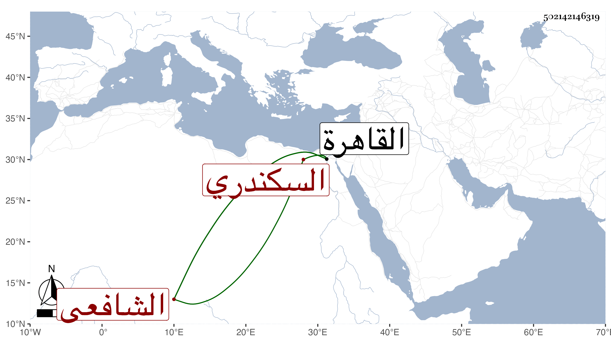

0902Sakhawi.DawLamic.ITO20230111-ara1.EIS1600.502142146319
Biography ID: 502142146319
366
محمد بن محمد بن علي بن أحمد الشمس أبو عبد الله بن البدر السكندري الشافعي نزيل القاهرة ويعرف بابن أبي ركبة . نشأ متكسبا ثم أقبل على العلم واشتغل ببلده على النوبي وقدم القاهرة غير مرة فأخذ عني في تقريب النووي وتفهما وفي البخاري وغيرهما ثم قطنها ولازم ابن قاسم وحصل شرحه للمنهاج واستقر عنده في صوفية المزهرية وسكنها وكذا أخذ عن التقي بن قاضي عجلون وكان خيرا ساكنا فقيرا قانعا . مات قريبا من سنة تسعين .
